Малик Хашимов · продюсер женских блогов
Как блог становится сериалом, за которым следят
Разбор твоего Instagram: что уже работает, куда идём и по какому методу.
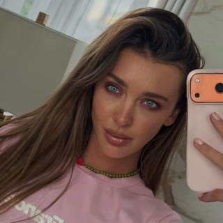
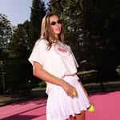
Padel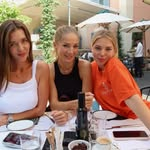
Fix Camp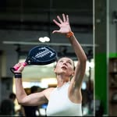
Моя страсть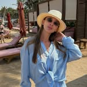
OUTFITSФорматы появляются обрывками: попробовала один, потом другой, потом третий. Нет понятных рубрик, ради которых зритель возвращается.
Целостная личность из этого не складывается.
Это основа, на которой строим дальше.
Цель — стать одним из главных лидеров мнений в паделе в России. Медийная личность с насыщенной жизнью, где всё крутится вокруг тебя. Не ты подстраиваешься под блог, а блог показывает твою жизнь.
В каждой линии — повторяемость и живое взаимодействие с людьми.
Твои турниры, кэмпы, проекты — как сериал, у которого есть начало, путь и финал. За таким следят и ждут следующую серию.
Предпринимательница, владелица бренда JAMALI, мама двух девочек. Начинали с 600 подписчиков.
Главное в этом кейсе — серии. Одна серия из пяти роликов дала около 14 млн просмотров и 72,7% всех новых подписчиков за первую фазу. Формат зашёл — повторяли его, пока он не попал в массовую раздачу.
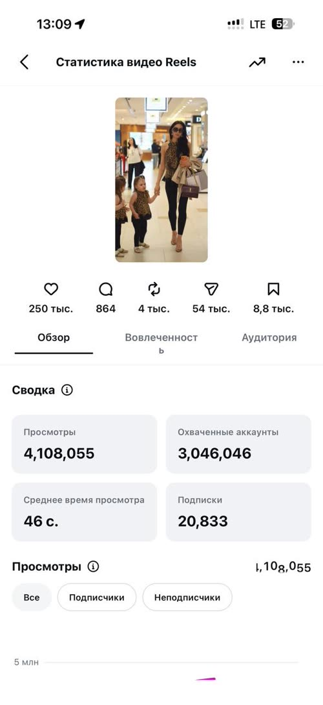
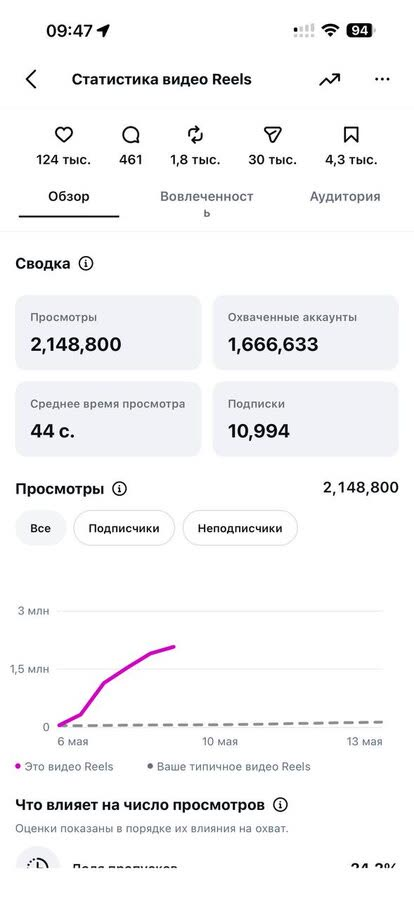
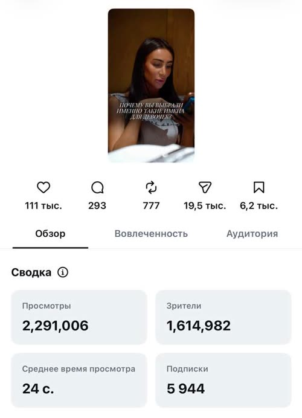
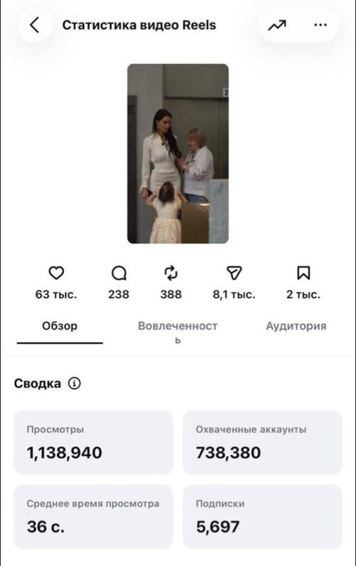
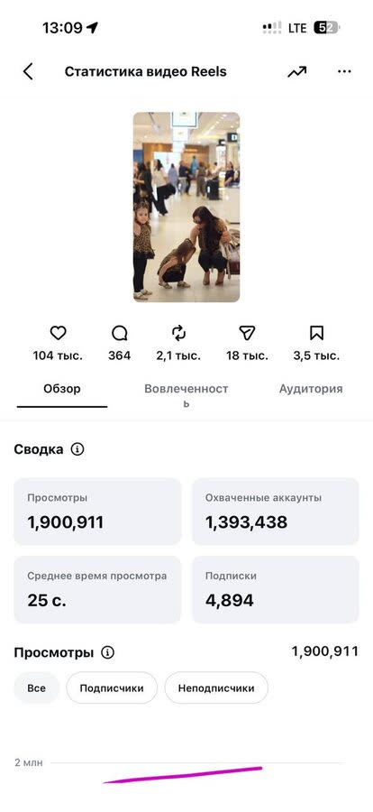
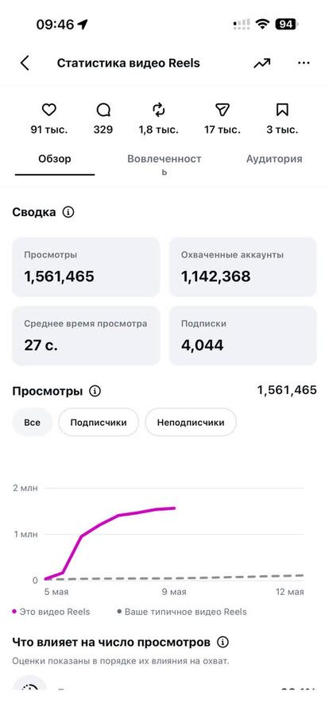
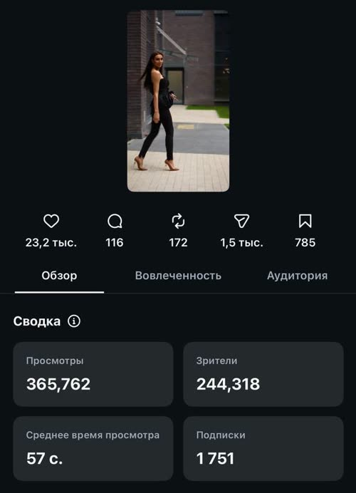
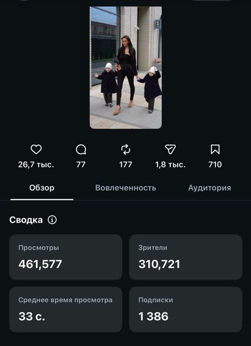
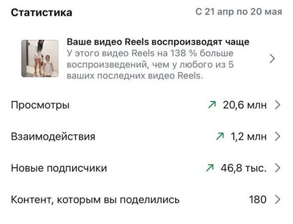
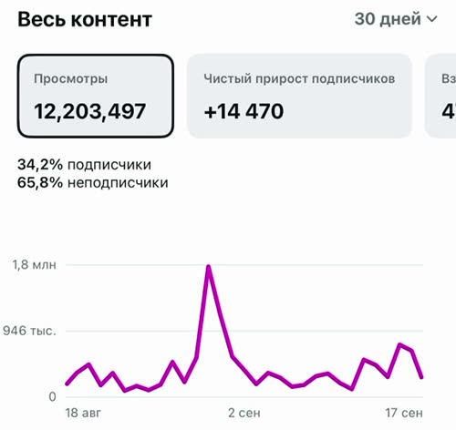
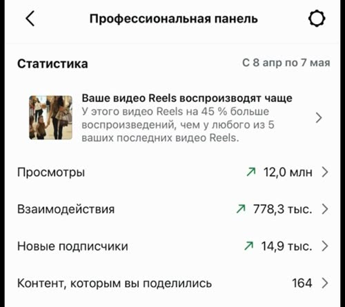
Блог с нуля: новый аккаунт, до этого блог не вела. Первые 10 дней публикаций.
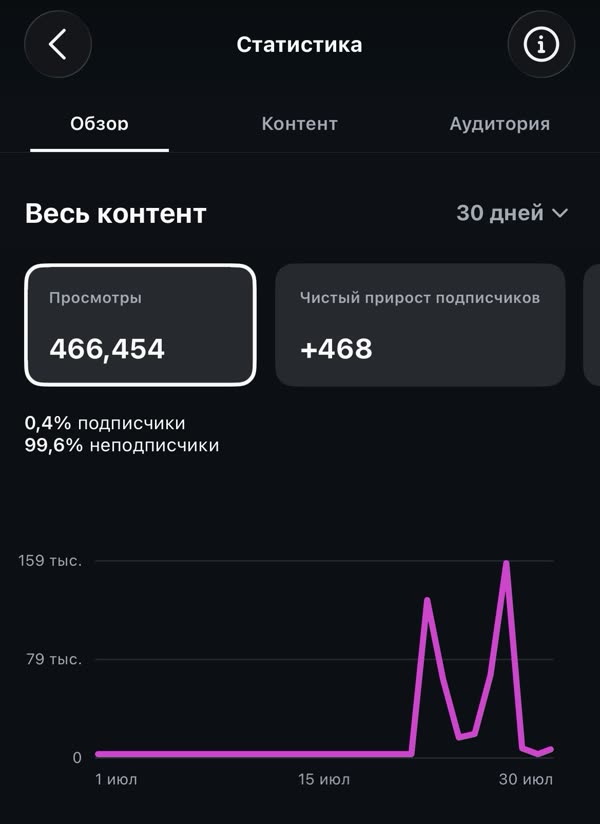
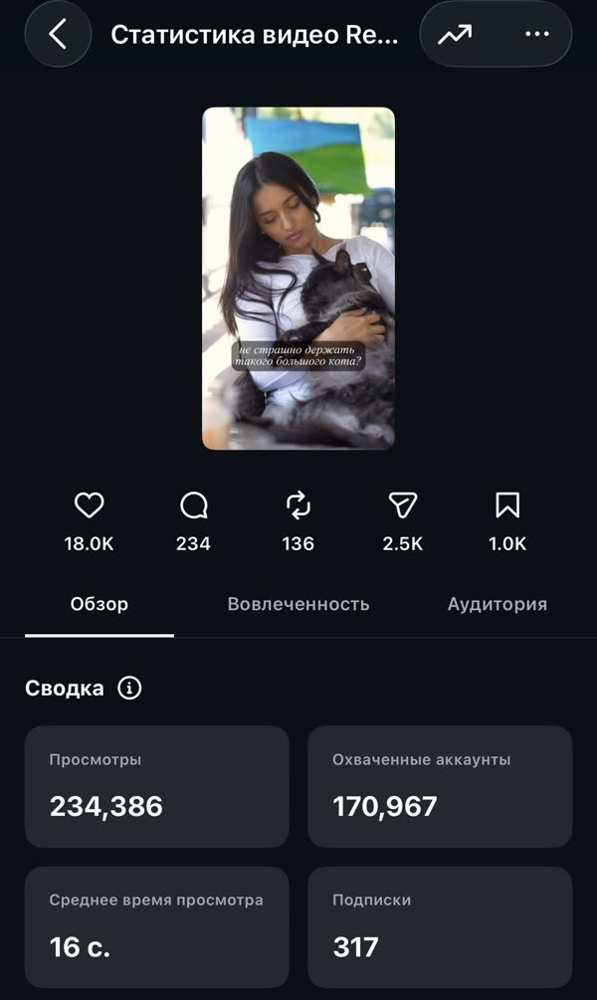
Клиентка, личный блог. Разговорный формат: живая речь в кадр, без трендов.
Живая речь держит зрителя. Ролики, где ты говоришь в кадр, тоже приводят подписчиков.
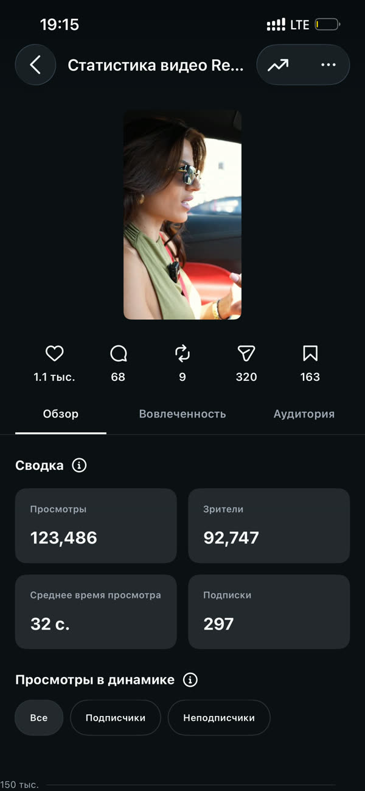